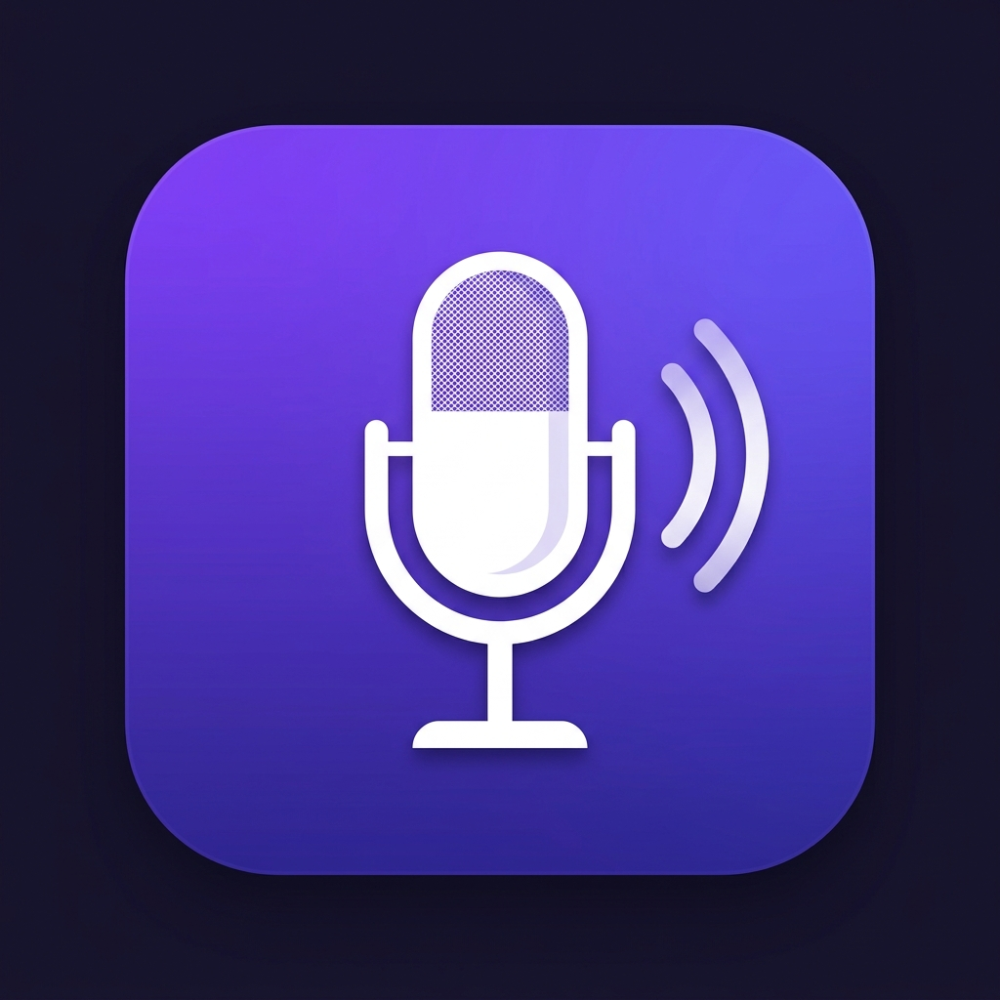

Hold the key
Press and hold your shortcut anywhere — Alt+Shift+D unless you change it. A small pill appears over the app you were using. Double-tap to lock it hands-free.

Dictata DownloadDictation for Windows
Dictata turns your voice into clean, punctuated text in whatever app already has focus — email, a case file, a terminal. No window to switch to, no copy and paste, no Dictata account.
Windows 10 & 11 · Bring your own Gemini key · MIT licensed
Three seconds, start to finish
Press and hold your shortcut anywhere — Alt+Shift+D unless you change it. A small pill appears over the app you were using. Double-tap to lock it hands-free.
Speak naturally. Dictata removes the “um”s, fixes punctuation, and applies your dictionary of names and terms.
The text is pasted into the field that had focus. Your clipboard is restored, and the app you were in is left exactly as it was.
The whole point
Dictata has no server of its own. Audio goes straight from your PC to the Gemini endpoint that matches the API key you entered, and nowhere else. No analytics, no telemetry, no “sign in to continue”.
The one outbound connection is the model request. If you can read a network log, you can verify it yourself — the source is MIT licensed.
Proof, not promises
The app ships a local dashboard at 127.0.0.1. It shows what was said, how
long it took, where it landed, and whether the paste succeeded — and it is served
by your own copy of the app, not by us.
Timing, model, target app and outcome for each attempt — including the ones that failed to paste.
Keep forever or expire after a day, a week or a month. The sweep runs at launch and after each dictation.
History and audit records as JSON or CSV, written by the native save dialog to wherever you choose.
The dashboard is bound to localhost and unlocks with a token generated on this machine. There is nobody to sign in to.
Legal, medical, finance and public-sector teams dictate all day and cannot send audio to a vendor they have not vetted. Dictata is the version they can defend: your key, your folder, your delete button, your export.
If the text does not land where you were already typing, it has not done its job.
Download for Windows